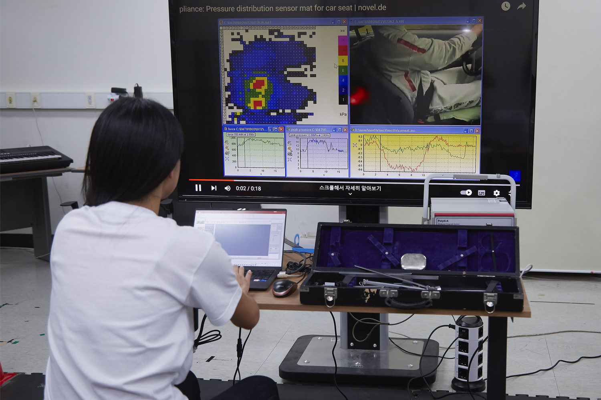
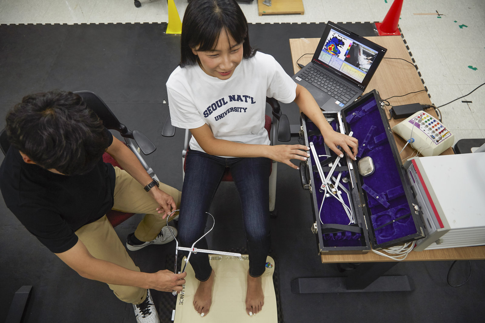
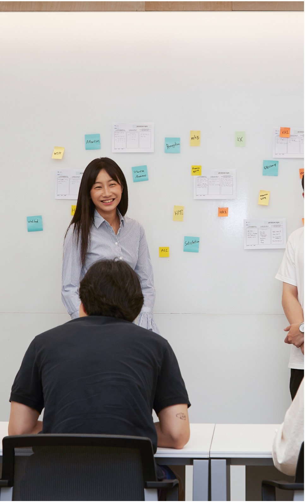
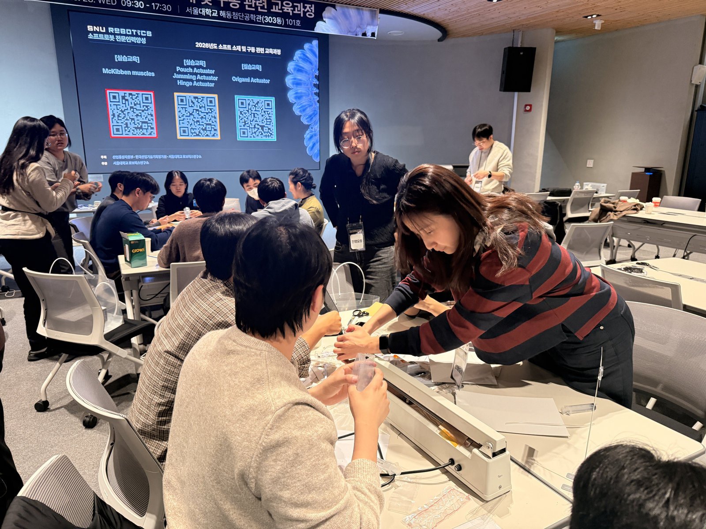
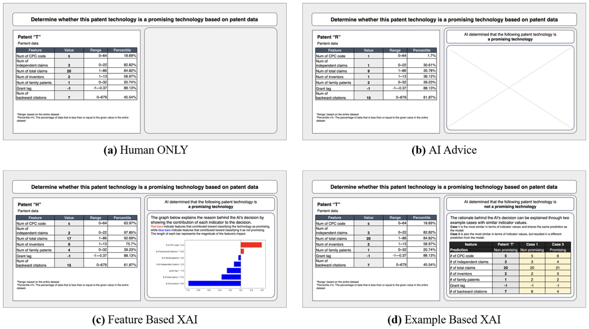
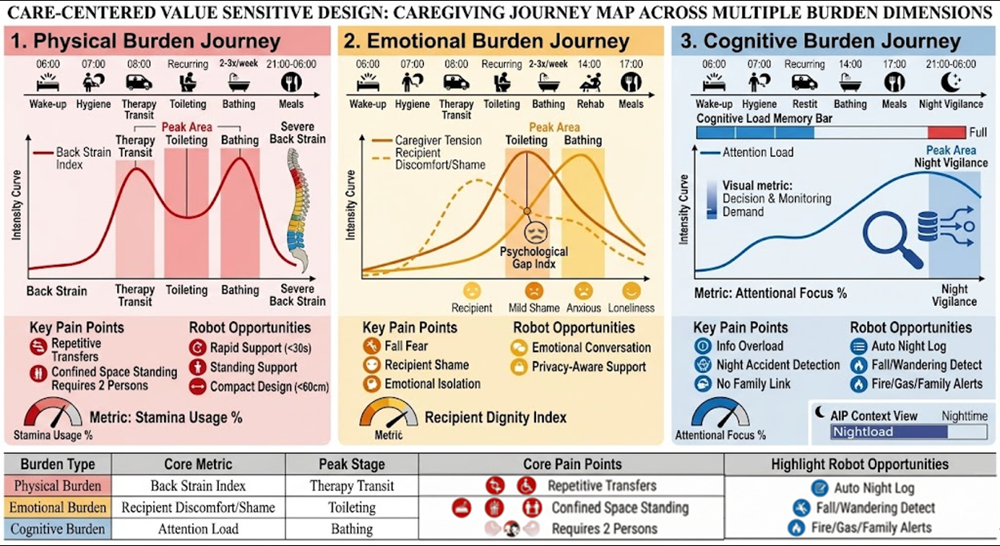
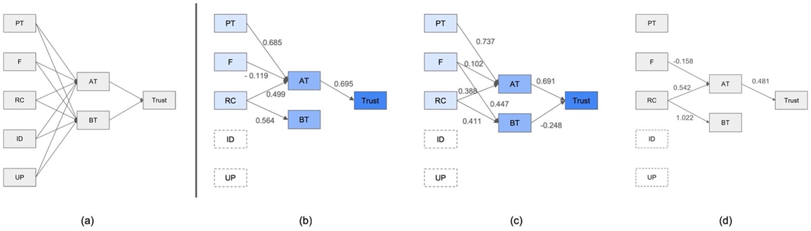

01
Human–AI collaboration
Examining trust, reliance, and situation awareness in AI-supported decision-making.
Jane Lee, Ph.D.
Postdoctoral Researcher
Robotics Institute, Seoul National University
I study how people understand, trust, and work with intelligent systems—bringing a human-centered perspective to AI, robotics, and the emerging world of Physical AI.
Jane Lee is a postdoctoral researcher at the Robotics Institute, Seoul National University. Her research brings a human factors perspective to the design and evaluation of AI and autonomous systems.
She received her Ph.D. in Industrial Engineering, specializing in ergonomics, from Seoul National University. Her work spans human–AI collaboration, supervisory control, and care-centered robotics.
At the Robotics Institute, she is extending this work toward Physical AI and robotics, bringing questions of trust, interaction, and human needs to intelligent systems that interact with the physical world.




My work connects human factors and ergonomics with the design of AI and robotic systems, focusing on the people who rely on, interact with, and supervise them.
Examining trust, reliance, and situation awareness in AI-supported decision-making.
Translating qualitative insights and stakeholder values into measurable considerations for human-centered design.
Studying supervisory control and interfaces that support people working with autonomous systems, including multiple unmanned vehicles.
Extending human-centered research toward intelligent systems that interact with the physical world.
Selected work across AI-supported decision-making, human factors, and care-centered robotics.
Explore more research on my profiles:

Lee et al. · Ergonomics · Advance online publication

Lee et al. · IEEE RO-MAN 2026 · Oral presentation

Lee et al. · Human Factors and Ergonomics Society Annual Meeting